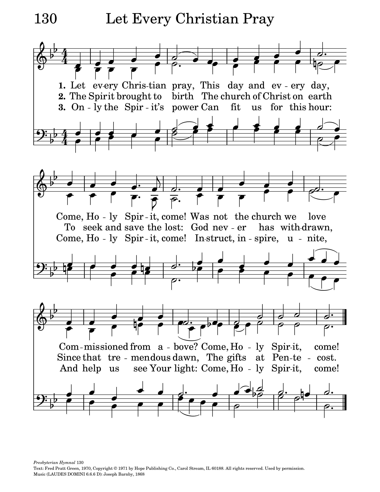

|
|
303信徒應當禱告 |
|
1 Let every Christian pray, 2 The Spirit brought to birth 3 The Holy Spirit's power
|
|
|
http://sooopu.com/html/301/301465.html
https://hymnary.org/text/let_every_christian_pray
 |
|
|
|
|


Let every Christian pray (Pratt Green) https://youtu.be/zwViZ5dW47Q -
Let every Christian pray
organ https://youtu.be/qqbH2gk-zoE
| Text: | Let Every Christian Pray |
| Author: | Fred Pratt Green |
| Tune: | LAUDES DOMINI |
| Composer: | Joseph Barnby |
| Short Name: | Fred Pratt Green |
| Full Name: | Green, Fred Pratt, 1903-2000 |
| Birth Year: | 1903 |
| Death Year: | 2000 |

The name of the Rev. F. Pratt Green is one of the best-known of the contemporary school of hymnwriters in the British Isles. His name and writings appear in practically every new hymnal and "hymn supplement" wherever English is spoken and sung. And now they are appearing in American hymnals, poetry magazines, and anthologies.
Mr. Green was born in Liverpool, England, in 1903. Ordained in the British Methodist ministry, he has been pastor and district superintendent in Brighton and York, and now served in Norwich. There he continued to write new hymns "that fill the gap between the hymns of the first part of this century and the 'far-out' compositions that have crowded into some churches in the last decade or more."
--Seven New Hymns of Hope , 1971. Used by permission.
| Short Name: | Joseph Barnby |
| Full Name: | Barnby, Joseph, 1838-1896 |
| Birth Year: | 1838 |
| Death Year: | 1896 |
Joseph Barnby (b. York, England, 1838; d. London, England, 1896)

An accomplished and popular choral director in England, Barby showed his musical genius early: he was an organist and choirmaster at the age of twelve. He became organist at St. Andrews, Wells Street, London, where he developed an outstanding choral program (at times nicknamed "the Sunday Opera"). Barnby introduced annual performances of J. S. Bach's St. John Passion in St. Anne's, Soho, and directed the first performance in an English church of the St. Matthew Passion. He was also active in regional music festivals, conducted the Royal Choral Society, and composed and edited music (mainly for Novello and Company). In 1892 he was knighted by Queen Victoria. His compositions include many anthems and service music for the Anglican liturgy, as well as 246 hymn tunes (published posthumously in 1897). He edited four hymnals, including The Hymnary (1872) and The Congregational Sunday School Hymnal (1891), and coedited The Cathedral Psalter (1873).
Notes
Joseph Barnby (b. York, England, 1838; d. London, England, 1896) composed LAUDES DOMINI for this text. Tune and text were published together in the 1868 Appendix to Hymns Ancient and Modern and they have been inseparable ever since. An accomplished and popular choral director in England, Barnby showed his musical genius early: he was an organist and choirmaster at the age of twelve. He became organist at St. Andrews, Wells Street, London, where he developed an outstanding choral program (at times nicknamed "the Sunday Opera"). Barnby introduced annual performances of J. S. Bach's St. John Passion in St. Anne's, Soho, and directed the first performance in an English church of the St. Matthew Passion. He was also active in regional music festivals, conducted the Royal Choral Society, and composed and edited music (mainly for Novello and Company). In 1892 he was knighted by Queen Victoria. His compositions include many anthems and service music for the Anglican liturgy, as well as 246 hymn tunes (published posthumously in 1897). He edited four hymnals, including The Hymnary (1872) and The Congregational Sunday School Hymnal (1891), and coedited The Cathedral Psalter (1873).
LAUDES DOMINI is one of Barnby's better tunes; many others have been forgotten or charitably retired by hymnal committees. The tune's Latin title, which means "the praises of the Lord," is derived from the litany refrain.
LAUDES DOMINI's most notable element is its built-in retard in the final phrase. Sing the stanzas in antiphonal fashion but have the entire congregation sing the refrain. Use strong organ accompaniment with a bit more stately tempo on the fifth stanza. Do not add any further ritardando to the final phrase; the composer has already provided it.
--Psalter Hymnal Handbook, 1988
20 Powerful Daily Prayers to Help Get You Through Every Day of the Year
Recite one of these daily devotionals in the morning or during evening hours.
Although people of faith might not want to admit it, most can probably remember a time when reciting a daily prayer or two was not exactly a part of their everyday routine. For many, daily prayer is something they turn to when life becomes stressful, difficult, or saddening. It can be easy to forget about the habit when life becomes busy or when everything is going well. But having a daily habit of healing through prayer is a great way to stay grounded in your faith on a day-to-day basis and prioritize reflective time between you and God. Reading a prayer for today will not only help you feel closer to God, but can also relieve daily stress and anxiety.
But if it's been a while since you read Bible scripture, finding a place to start can feel overwhelming. That's why it's helpful to have some short go-to Bible verses and prayers that can provide guidance and strength through every season of your life, whether you pray every day, week, month, or barely at all. The most important thing to remember, though, is that no matter how often you pray, God is always ready to listen.
Find more strength, peace and hope every day with WD's Everyday Inspiration Bible verse cards — a portable box of inspo that will keep the encouragement you need close at hand.